Matthew's tablet test, 30 Oct: the editions hold 407 towns and 1.24 million homes, and the County > town > neighbourhood list was far too long. All four offered parts are built for the five editions and client installs. Sixfold keeps its county list (checked in the test). The harness has 99 towns, so three small made-up towns (Fruita, Sterling, Salida, marked "(test)") stand in for the Western Slope, the Eastern Plains and the mountains. They are fixture data in the harness only.
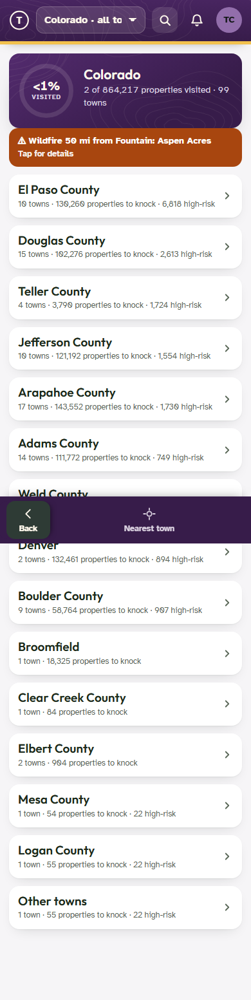
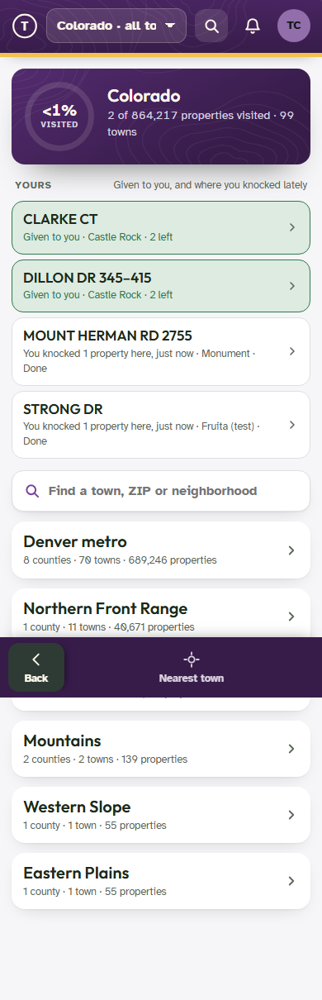
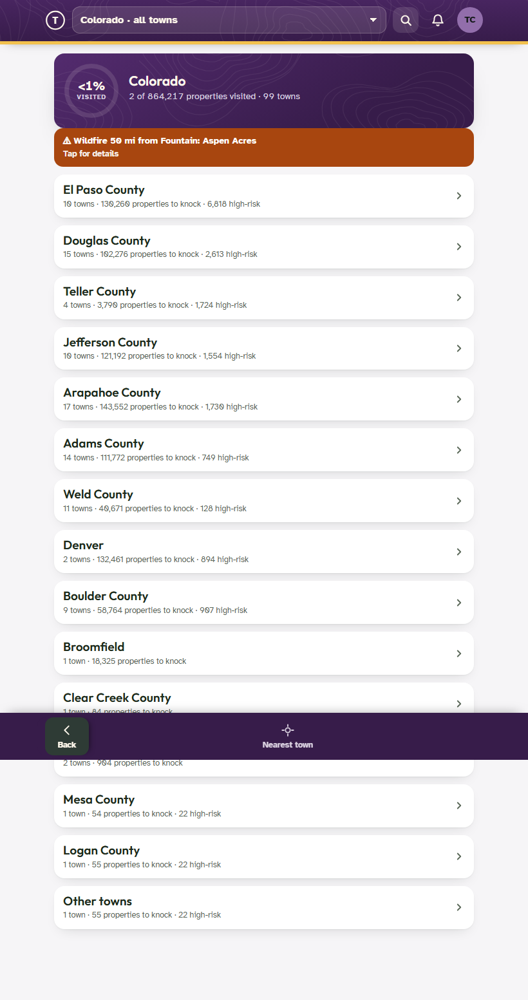
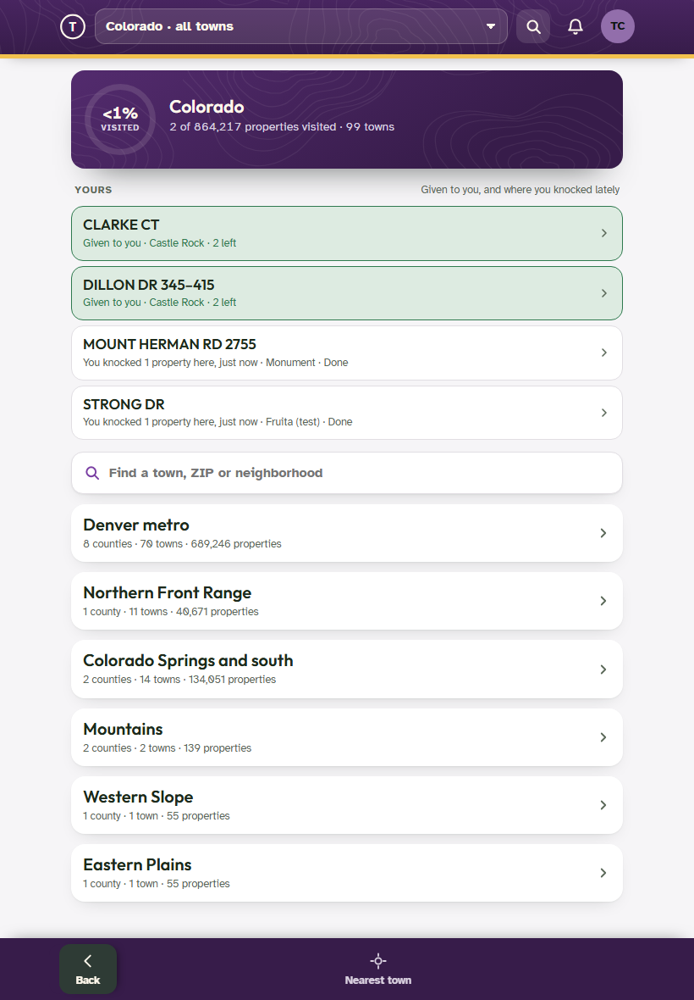
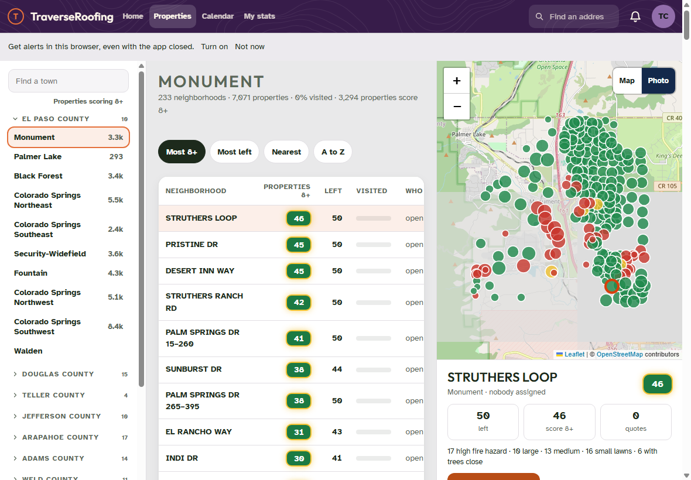
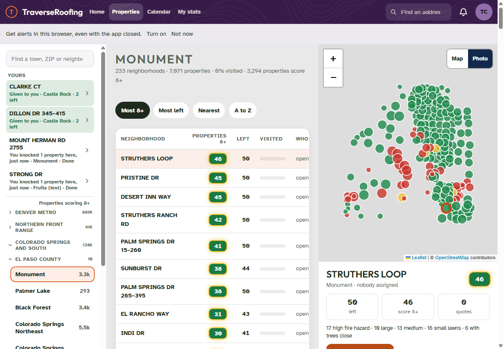
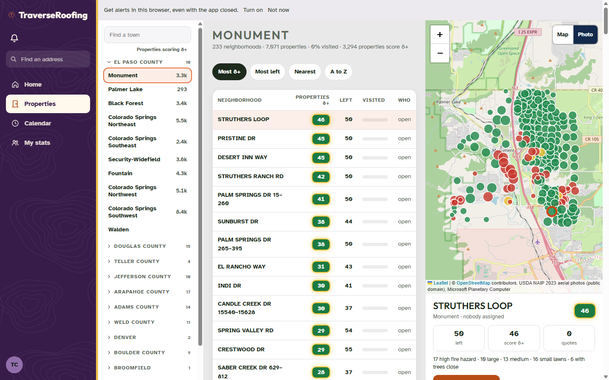
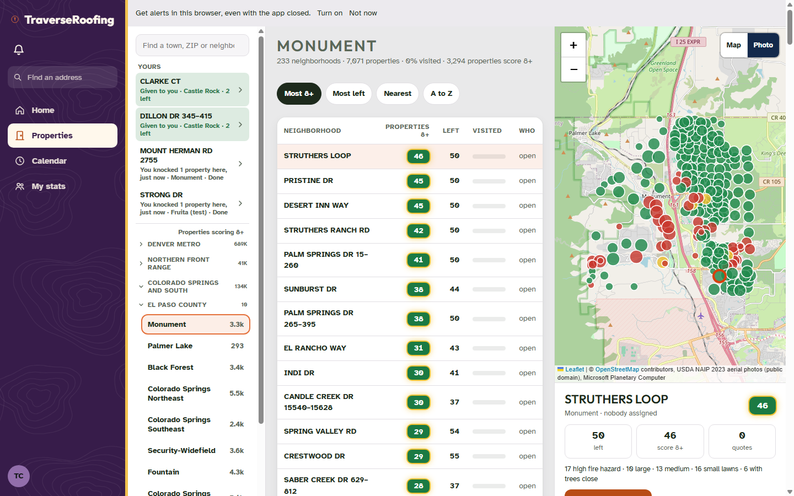
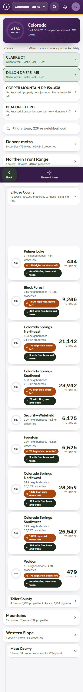
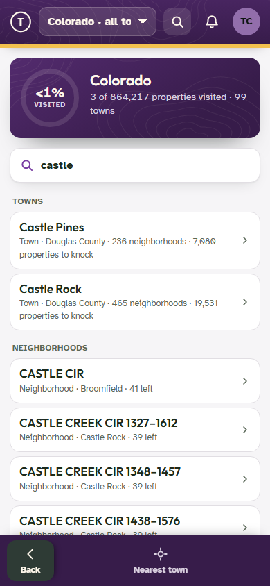
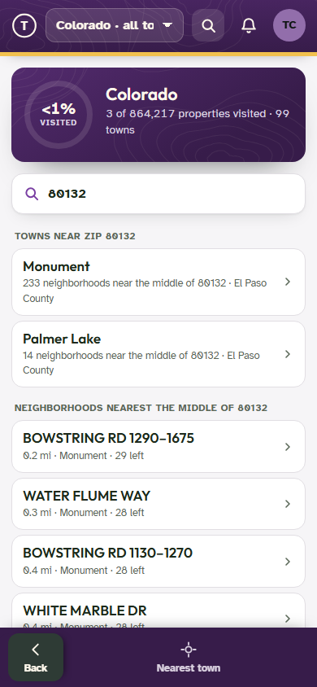
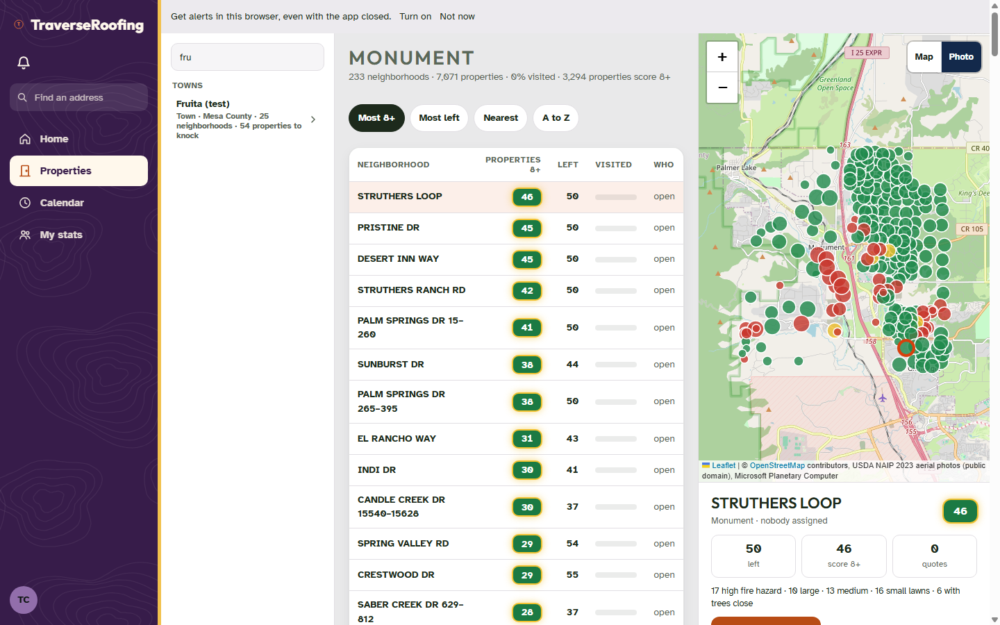
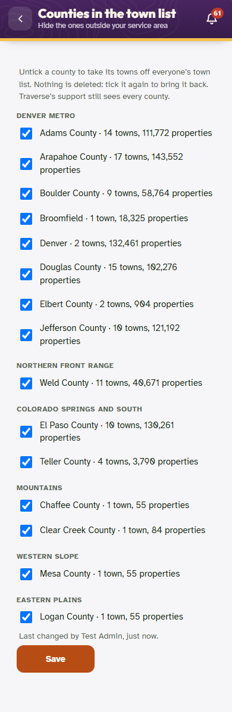
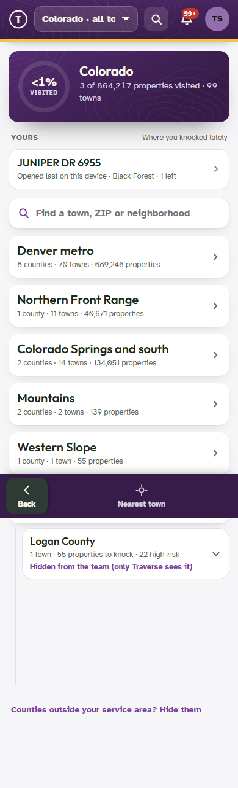
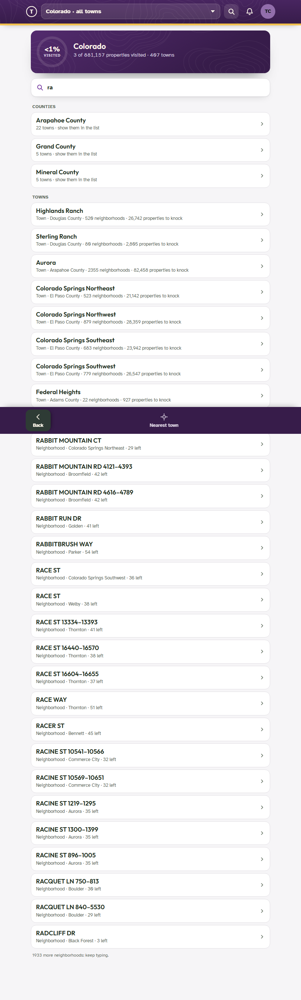
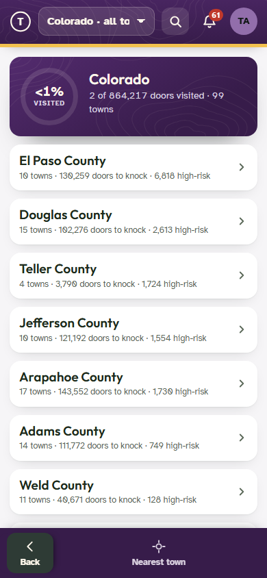
| What | Result |
|---|---|
| Town cards drawn when the list opens (regions closed) | 0 (cards are drawn when a county opens) |
| Back from a town to the 407-town list | 30-45 ms (three runs) |
| Ten keys typed fast | results redrawn once (180 ms pause after the last key) |
| One search ("ra") over every town and neighbourhood | 5 ms, 31 rows |
tr47-test.mjs: 78 passed, 0 failed after merging main. It covers the edition with the fixture, the 407-town check and Sixfold.
| Regression suite | Before (code at 036b5219) | After (TR-47) |
|---|---|---|
| t1030 (edition), alone | 63 passed, 1 failed | 64 passed, 1 failed (the same plan-picker line; one more pass comes from the new Setup row) |
| reps (edition / Sixfold) | 37/0, 37/0 | 37/0, 37/0 |
| batch1029-ui (edition / Sixfold), alone | 3/1, 3/1 (timeout: email quick way) | 3/1, 3/1 (the same) |
| accounts (edition / Sixfold) | 29/1, 26/1 (timeouts: code card, tools) | 29/1, 26/1 (the same) |
| card-test | 15 passed, 3 failed | 15 passed, 3 failed (the same three). The test loads the main tree's company.json, which has no a365, so the page treats it as an edition. Its town click now opens the region and county first. |
| roles (edition / Sixfold) | 75/0, 75/0 | 75/0, 75/0 |
| perms (matrix) | 119 passed, 5 failed | 119 passed, 5 failed (the same five) |
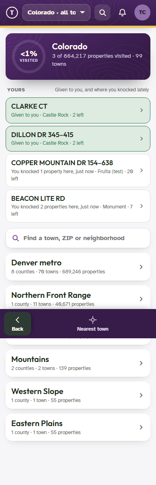
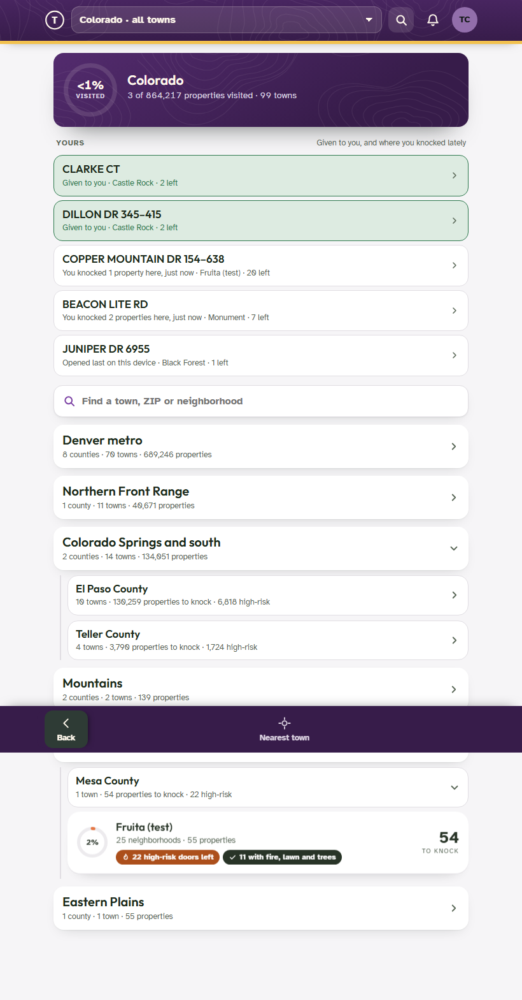
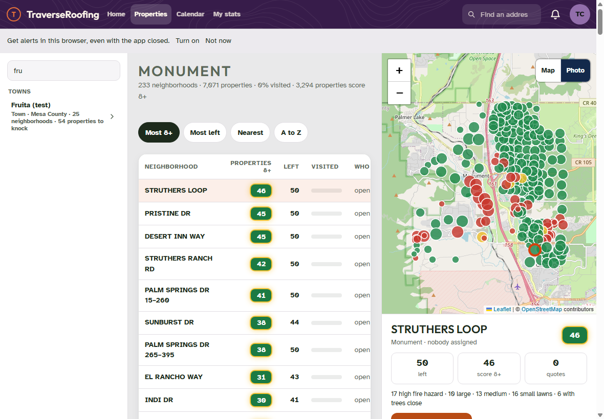
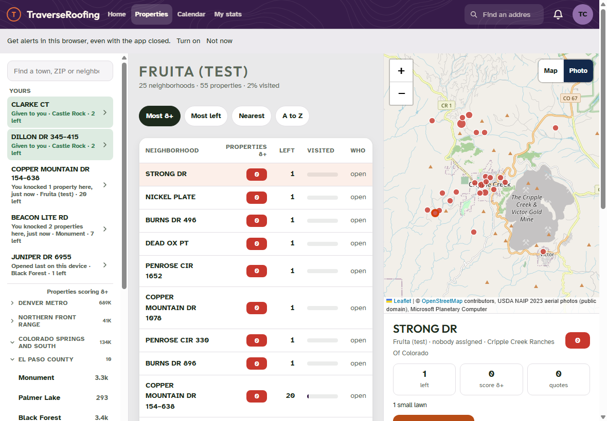
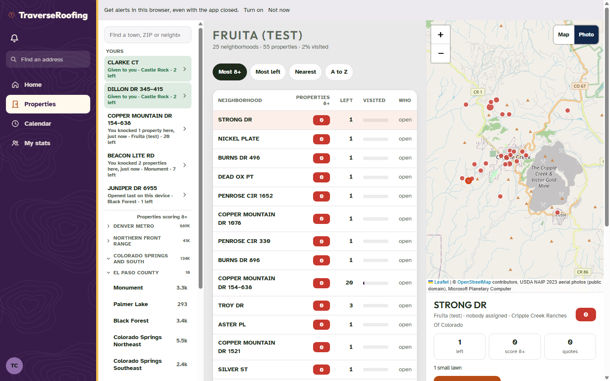